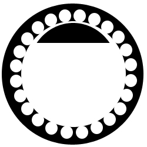
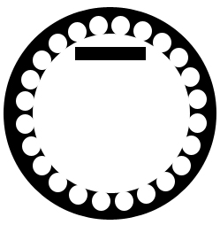
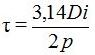
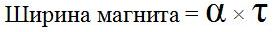
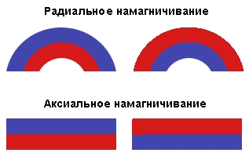
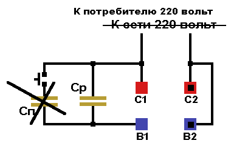

Перейти на главную страницу справочника.
Самодельный генератор.
Периодически сталкиваюсь с такой ситуацией, заказчик просит перемотать статор электродвигателя из которого он собирается сделать генератор на постоянных магнитах. Чаще всего с такой просьбой обращаются самодельщики ветряных электростанций. На вопрос о характеристиках самодельного генератора ответа у заказчика нет, а двигатель доставленный в перемотку невозможно перемотать на требуемые обороты.
- На этой странице справочника расскажу как правильно выбрать асинхронный электродвигатель для переделки его в генератор на постоянных магнитах.
1. Определение основных параметров самодельного генератора.
- Выбор количества оборотов обмотки самодельного генератора.
Для электростанции на дизельном или бензиновым двигателе обороты обмотки самодельного генератора должны совпадать с оборотами дизельного или бензинового двигателя при максимальном крутящем моменте, обычно 1500 или 3000 об/мин. Если обороты обмотки генератора не совпадают с оборотами дизельного или бензинового двигателя, частота тока будет отличаться от 50 Гц. и многие бытовые приборы подключенные к Вашей электростанции работать не смогут или вообще выйдут из строя.
Для ветряной электростанции, чем меньше обороты обмотки самодельного генератора, тем лучше. Напряжение и частота тока в ветряных электростанциях благодаря непостоянству скорости ветра изменяется в больших пределах. - Выбор напряжения самодельного генератора.
Если электростанция будет использоваться как аварийный источник питания в частном доме, то обмотку самодельного генератора лучше выполнить однофазной 230 вольт.
В ветряной электростанции для зарядки аккумуляторов 12 вольт напряжение обмотки 16 вольт при минимальных оборотах, а для зарядки аккумуляторов 24 вольта напряжение обмотки генератора 28 вольт при минимальных оборотах. - Определение требуемой мощности самодельного генератора.
Для электростанции на дизельном или бензиновым двигателе. Посчитайте общую мощность всех электроприборов которые могут быть одновременно подключены к сети, но помните что мощность генератора должна быть на 30% меньше мощности дизельного или бензинового двигателя. При расчете общей нагрузки асинхронного генератора, мощность индуктивных приборов (электродвигателей, стиральных машин, холодильников) увеличивайте в 4 раза. - Выбор типа генератора, асинхронный или синхронный на постоянных магнитах.
Для аварийного источника питания в частном доме лучше отдать предпочтение асинхронному генератору, так как качество напряжения будет близким к стандартному. Самый простой асинхронный генератор получится из конденсаторного однофазного асинхронного электродвигателя. В самодельном генераторе на постоянных магнитах качество напряжения будет зависеть от формы магнитов.
В генераторах для ветряных электростанций работающих на зарядку аккумуляторов требований к качеству сети вообще никаких. Поэтому делайте трёхфазный генератор на постоянных магнитах.
2. Выбор асинхронного электродвигателя для электростанции на дизельном или бензиновым двигателе.
- Для электростанций на дизельном или бензиновым двигателе очень просто найти подходящий асинхронный электродвигатель для изготовления генератора, причем не важно собираетесь использовать электродвигатель как асинхронный генератор или как синхронный с постоянными магнитами. Основными параметрами при покупки или перемотке электродвигателя являются: обороты, мощность и в зависимости от Вашего решения трёхфазный или однофазный род тока.
3. Выбор асинхронного электродвигателя для ветряной электростанции.
- Для ветряной электростанции найти подходящий асинхронный электродвигатель сложно. Низкооборотные электродвигатели выпускаются только для специального оборудования, а в единых сериях минимальные обороты электродвигателей 750 или 600. Поэтому Вам придется обращаться в ближайшую мастерскую по ремонту асинхронных электродвигателей и заказывать пересчет и перемотку имеющегося у Вас электродвигателя. Прежде чем обращаться к обмотчику, нужно проверить электродвигатель на возможность перемотки на низшую скорость вращения. Посчитайте количество пазов статора электродвигателя и по таблице №1 определите на какую наименьшую скорость вращения можно пересчитать обмотку Вашего электродвигателя.
Таблица №1
соотношения пазов статора к минимально возможным оборотам асинхронного электродвигателя.
| Количество пазов статора. | 24 | 36 | 48 | 54 | 60 | 72 |
| Минимально возможные обороты трёхфазного двигателя | 375 | 250 | 187,5 | 166,6 | 150 | 125 |
| Минимально возможные обороты однофазного двигателя | 500 | 333 | 250 | 333 | 200 | 166,6 |
Минимально возможные обороты асинхронного электродвигателя с другим количеством пазов Вы сможете определить на главной странице этого справочника.
- По таблице № 1 видно, что чем больше пазов статора тем на меньшую скорость вращения можно пересчитать его обмотку. При пересчете асинхронного электродвигателя на меньшее число оборотов, мощность электродвигателя уменьшается.
- Если нет возможности обратиться к обмотчикам, возьмите трёхфазный электродвигатель 750 или 600 об/мин с напряжением 380 вольт и так как реальные обороты ветряка будут намного меньше, то и напряжение на выводах обмотки тоже уменьшится. Максимальный ток в обмотке на всех режимах работы не должен превышать указанного на табличке электродвигателя.
4. Количество магнитов ротора для самодельного синхронного генератора.
- Количество магнитов, которые Вам потребуется установить на роторе равно количеству полюсов обмотки 2p и нет разницы однофазный или трёхфазный генератор Вы собираете.
Таблица №2.
| 2p (количество магнитов ротора) | 2 | 4 | 6 | 8 | 10 | 12 |
| об. мин. f=50Гц | 3000 | 1500 | 1000 | 750 | 600 | 500 |
| 2p (количество магнитов ротора) | 14 | 16 | 18 | 20 | 22 | 24 |
| об. мин. f=50Гц | 428 | 375 | 333 | 300 | 272 | 250 |
| 2p (количество магнитов ротора) | 26 | 28 | 30 | 32 | 34 | 36 |
| об. мин. f=50Гц | 230 | 214 | 200 | 187,5 | 176,4 | 166,6 |
| 2p (количество магнитов ротора) | 38 | 40 | 42 | 44 | 46 | 48 |
| об. мин. f=50Гц | 157,8 | 150 | 142,8 | 136,3 | 130,4 | 125 |
5. Форма магнитов ротора для самодельного синхронного генератора.
- В электростанциях на дизельном или бензиновым двигателе магнит (полюсной наконечник) ротора однофазных и трехфазных генераторов выполняют полукруглыми. Обратите внимание, что края магнита имеют больший воздушный зазор чем центр. Воздушный зазор у краев магнита в 1,5 раза больше чем в центре.

- В генераторах для ветряных электростанций работающих на зарядку аккумуляторов требований к качеству сети нет. Поэтому магнит (полюсной наконечник) выполняют прямоугольной формы.

6. Размеры магнитов ротора для самодельного синхронного генератора.
- Длина магнита равна длине сердечника статора.
- Расчет ширины одного полюса, где Di - внутренний диаметр статора, 2p - число полюсов обмотки (по таблице № 2), τ - полюсное деление.

- Чтобы узнать сколько пазов перекрывает один полюс воспользуйтесь следующей формулой, где τ - количество пазов на полюсное деление, Z1 - количество пазов статора, 2p - число полюсов.

- Ширина магнита зависит от коэффициента полюсного перекрытия α :

1 - Для двухполюсных генераторов предварительное значение коэффициента полюсного перекрытия: α=0,5 - 0,6.
2 - Для четырех и более полюсов генератора предварительное значение коэффициента полюсного перекрытия: α=0,65 - 0,85.
7. Марка магнитов для самодельного синхронного генератора.
- В первую очередь на что нужно обратить внимание при покупке магнитов это максимальная рабочая температура, превышение которой грозит размагничиванием. Для правильного выбора максимальной температуры магнитов учитываются: температура воздуха, нагрев генератора от прямых солнечных лучей и нагрев обмотки.
Таблица параметров магнита для ветряного генератора.
Информация предоставлена руководителем организации производящей постоянные магниты.
| Рекомендуемые характеристики магнита | Наименование характеристик магнита |
| NdFeB | Материал магнита (Неодим-железо-бор) |
| N38H | Код материала |
| Эпоксидный лак | Антикоррозийное покрытие |
| Br ≥ 1,21 Tл | Остаточная магнитная индукция |
| Hcb ≥ 899 kA/м | Коэрцитивная сила по намагниченности |
| Hcj ≥ 1353 kA/м | Коэрцитивная сила по индукции |
| (BH)max ≥ 287 kДж/м3 | Максимальная магнитная энергия |
| Tw ≤ 120 C | Рабочая температура |
- Намагничивание в зависимости от формы магнита.

8. Подключение однофазного самодельного генератора к нагрузке.
- Схема подключения к потребителю асинхронного однофазного генератора такая же как у подключения однофазного электродвигателя к сети, но в генераторном режиме используется только рабочий конденсатор.

- Подключение к потребителю синхронного однофазного генератора.

20.07.2012 г.